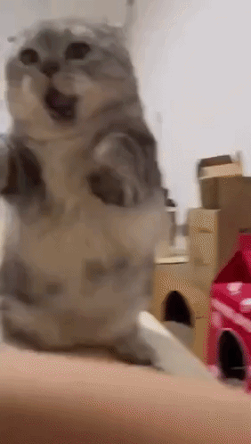

In the Club of Munchkins, we engage in any and all content related to the Munchkin Cat breed. Our interest in this breed is largely due to their intelligence and social behavior, often being compared to the personality you'd find in a dog. On this page, it will go into more depth about these interests.
We can be contacted via sending a contact form, which is accessible through the navigation bar above this page.

Gif of a British Shorthair mix playing with it's owner.